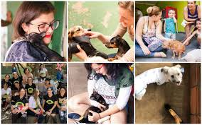

Bem-vindo à ONG Segunda Chance
Transformando vidas através do resgate e da adoção responsável de animais.
Conheça nossos projetosQuem Somos
Somos uma organização sem fins lucrativos que atua no resgate, cuidado e adoção de animais abandonados.
Missão
Promover o bem-estar animal e incentivar a adoção responsável.
Visão
Ser referência nacional em proteção animal e engajamento comunitário.
Valores
- Respeito à vida
- Transparência
- Empatia
- Responsabilidade social
Nosso Impacto
- 🐶 +2.000 animais resgatados
- 🏡 +1.500 adoções realizadas
- 🤝 +300 voluntários ativos
Nossa Equipe
Contamos com profissionais dedicados e voluntários apaixonados pela causa animal.
Relatórios de Transparência
Acesse nossos documentos públicos e acompanhe a aplicação dos recursos:
Contato
📍 Rua Emiliano Perneta, 288 - Centro - Curitiba/PR
📞 (41) 9 9857-0289